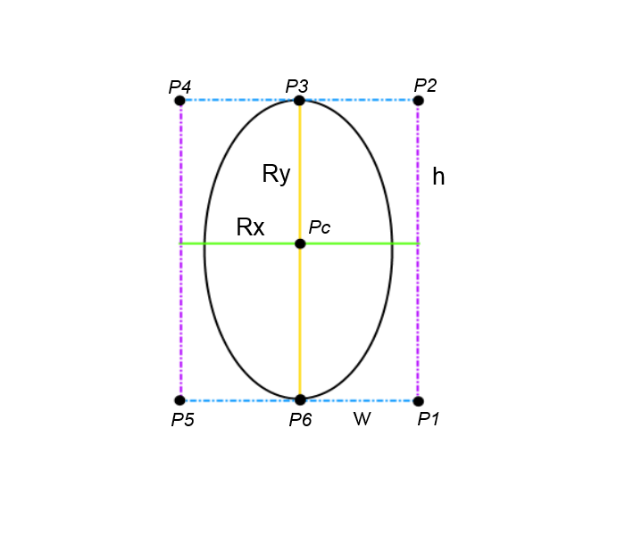

Drawn with
Bezier Curves
Native ellipse() function
HTML Canvas 2D Context specification defines CanvasRenderingContext2D.ellipse() function, but on a current moment only Chrome implements it.
That's why I (Artyom Pokatilov) developed custom way to draw oval with cubic curves - here it is:
Let's watch initial oval with rotation angle = 0:
You can see here:
Looks easy to calculate P1-P6 coordinates in this situation. Problems come with rotation angle:

Here we come with our additional calculations:

We can get rotation angle (α) using wikipedia description like that:

Then we can easy find dx1-2 and dy1-2:

Final step - find points coordinates. Easy to see that we can get P3 from Pc:

Then - P2 from P3:

And P4 from P3:

The same we will have for bottom part:

Oval consists of 2 cubic curves:
That's all.